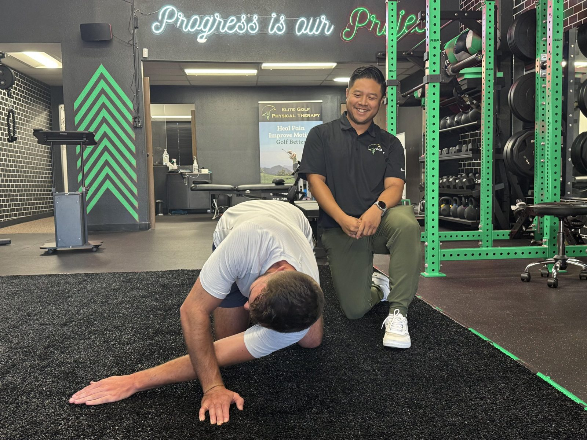

Ask most golfers where their turn comes from and they will point to their hips or their shoulders. Very few point to the middle of their back. Yet that stretch of spine between your shoulder blades is built to supply a large share of the rotation in your swing, and when it stiffens up, the rest of your body has to find that motion somewhere else. That is where distance goes missing and where a lot of golf injuries begin.
What your thoracic spine does in the swing
Your spine has three main sections. The neck (cervical spine) sits on top, the lower back (lumbar spine) sits at the bottom, and the twelve vertebrae in between, the ones your ribs attach to, make up the thoracic spine.
These sections are built for different jobs. The lumbar spine is shaped mostly for bending forward and back, and it allows only a small amount of twisting at each level. The thoracic spine is shaped for rotation. In a good backswing, the hips turn, the thoracic spine turns further on top of them, and the lower back stays relatively quiet in between, transferring force rather than producing the twist.
That separation between the upper body and the pelvis is what many coaches call the X-factor. It stores energy like a stretched spring and releases it in the downswing. It depends heavily on a mid-back that can rotate freely while you hold your posture over the ball.
Your lower back is built to stay steady while the joints above and below it do the turning. A stiff mid-back reverses those roles.
5 signs your mid-back is holding you back
Thoracic restriction rarely announces itself as mid-back pain. It usually shows up as something else in your swing or your body:
- A short backswing that feels full. You feel like you have turned all the way, but on video your lead shoulder barely gets behind the ball.
- Losing your posture. You stand up out of your spine angle in the backswing or early in the downswing, because rising up is an easy way to fake more turn.
- Sway or slide. Your hips drift away from the target going back, or toward it too early coming down, to create motion your upper body is not providing.
- An arms-only swing. The club gets to the top by the arms lifting, not by the body turning, which often leads to an over-the-top move and a slice.
- Pain somewhere else. Lower back soreness after a round, a cranky lead shoulder, or elbow pain can all be the bill for rotation the mid-back did not supply.

Why the mid-back gets stiff
For most adults the answer is simple: we spend most of the day in a rounded, forward posture. Desk work, driving, and phones all keep the thoracic spine flexed for hours, and joints adapt to the positions they spend the most time in. Over months and years, extension and rotation both shrink.
Age plays a part, as the spinal joints and the rib connections naturally become less mobile. Old injuries, a history of shoulder problems, and simply never training rotation all add up as well. The good news is that, in our experience, thoracic mobility is one of the more trainable limitations we see, provided the work is specific and consistent.
It is also worth knowing that stiffness is not always the whole story. Some golfers can rotate their mid-back well lying on a table, but cannot do it while holding a golf posture, because they lack the control to separate their upper body from their pelvis. Stretching alone does not fix that. Training does.
How we evaluate it
A good evaluation does not stop at “your back is stiff.” It works out how much rotation you have, where it is being lost, and what your swing is doing to compensate.
Seated rotation
Part of the TPI screen. Sitting with the hips locked in place, you rotate your upper body each way. Taking the hips out of the picture shows how much turn your mid-back really has, and whether one side is noticeably tighter than the other.
Rotation in golf posture
We repeat the test while you hold your address position. If you have the motion seated but lose it in posture, the problem is control, not just stiffness, and the treatment plan changes.
Extension
A mid-back stuck in a rounded position cannot rotate fully. We check how well you can straighten up through the upper back, since it often needs to improve first.
Hips and shoulders
The mid-back works as part of a chain. Limited hip rotation or shoulder mobility can look like a thoracic problem, and vice versa, so we test the joints above and below it too.
Your swing
Finally, we connect what we found to what we see in your swing. A loss of posture, a sway, or an arms-only backswing often lines up exactly with the physical limitation, and that is what tells us the fix will carry onto the course.
What improvement looks like
The plan usually has three layers: restore the motion with targeted mobility work and, where it helps, hands-on treatment; teach you to control that motion in golf posture; then build strength and speed in the new range so your body is willing to use it at full swing speed.
When the mid-back starts doing its share, golfers commonly notice a fuller turn that takes less effort, steadier posture through the swing, and less of the lower back or shoulder soreness that used to follow a round. Distance often improves as a side effect, because a body that turns well can store and release more energy without fighting itself.
If you have read our article on golf and lower back pain or hip mobility for golf, this will sound familiar. The painful spot is often compensating for a joint that is not doing its job, and the mid-back is one of the most common culprits.
The short version
Your thoracic spine is meant to supply much of your turn. When it stiffens, your lower back, shoulders, and arms make up the difference, and that costs you both distance and comfort. Finding out whether the limit is stiffness, control, or something further up or down the chain is what makes the fix stick.
Looking for treatment? See how we approach golf shoulder pain physical therapy in San Diego.
Note: This article is for general education and isn't a substitute for an individualized medical evaluation. Before starting new exercises, especially if you have significant or persistent pain, we recommend a thorough evaluation with a Doctor of Physical Therapy first. Book an evaluation so your plan is built around what your body actually needs.